Projects
"Computer Says No": Disability Benefits under AI Governance - '25
Applying for government disability benefits is essential yet often inaccessible. As Principal Lead, I am coordinating an interdisciplinary team working with 40 people living with aphasia to unpack the process and design more meaningful ways to engage. Early findings show the current system - including healthcare - limits people’s agency to contest top-down automation (e.g., robocalls). Barriers are baked into digital infrastructure: denial of support, dehumanising assessments, and prolonged bureaucratic limbo. The workload on applicants routinely exceeds their cognitive and energy budgets, undermining fairness, accessibility, and equal opportunity; and transparency remains weak. People are rightly sceptical that AI will “solve” this; current models have sharp knowledge boundaries even as government deployments expand. We are instead building public-good alternatives through responsible and mission-driven entrepreneurship. Watch this space!
This project is part of an Include + network for more information.
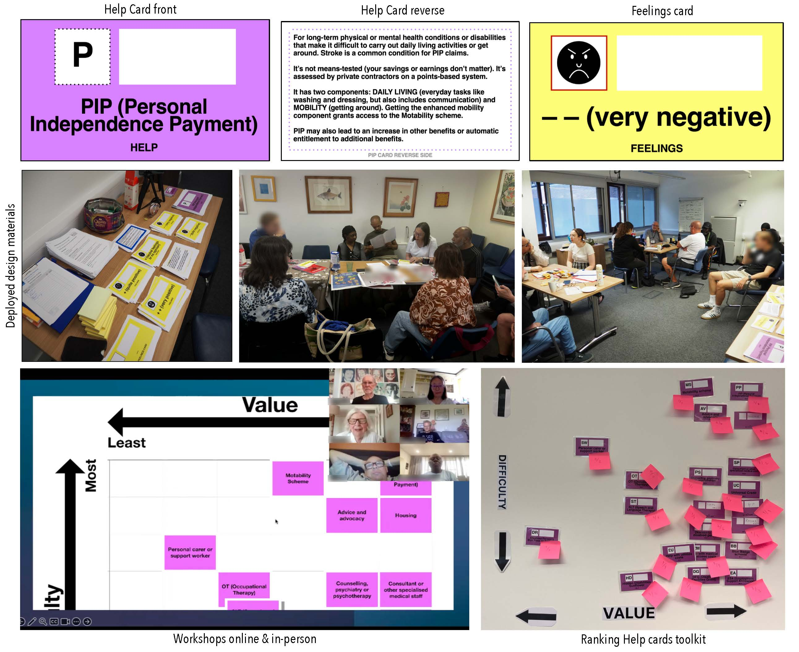
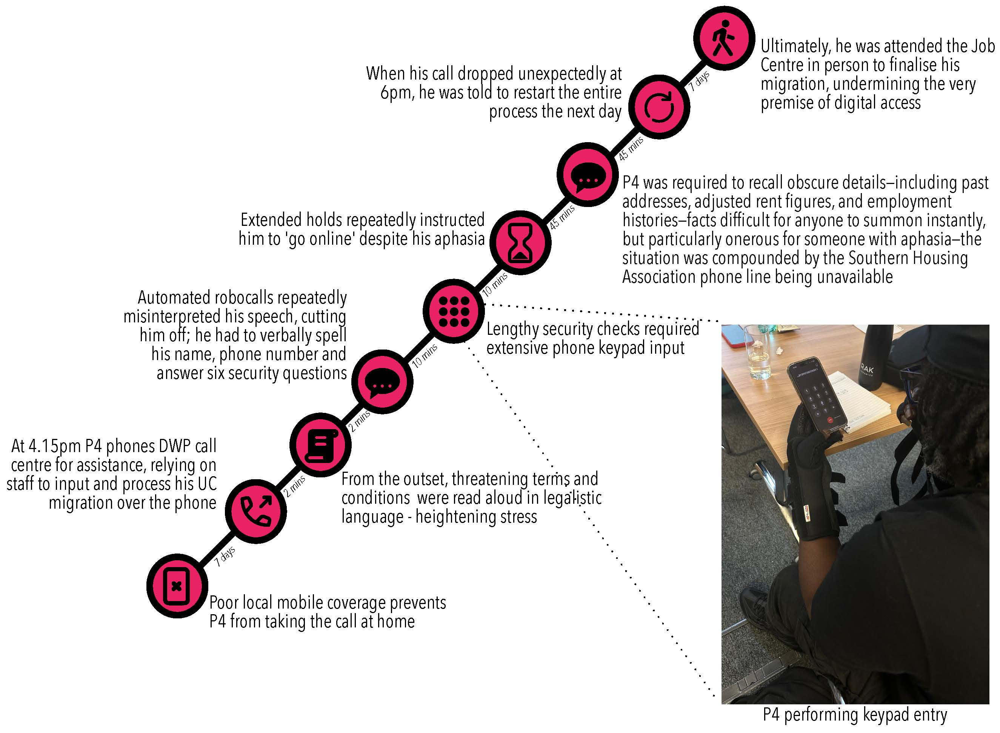
Sounds Accessible - '24/25
Last year we ran workshops with post-stroke survivors at Aphasia Re-Connect charity to understand how people use radio and podcasts. I started with a simple question – do people need accessible audio interfaces? It turns out, they do. Even small, simple interventions measurably improve listening. We then ran a longitudinal field deployment of a prototype app, co-designed with participants, to test these ideas in everyday use. We are distilling the work into adoption-ready audio-accessibility patterns that broadcasters and health providers can plug into products and portals: read-along highlighting, tiered summaries, pacing controls, character maps, and key-takeaway scaffolds. More details here. A mixed-methods evaluation is under review for CHI ’26 - hopefully good news soon 🤞🏻
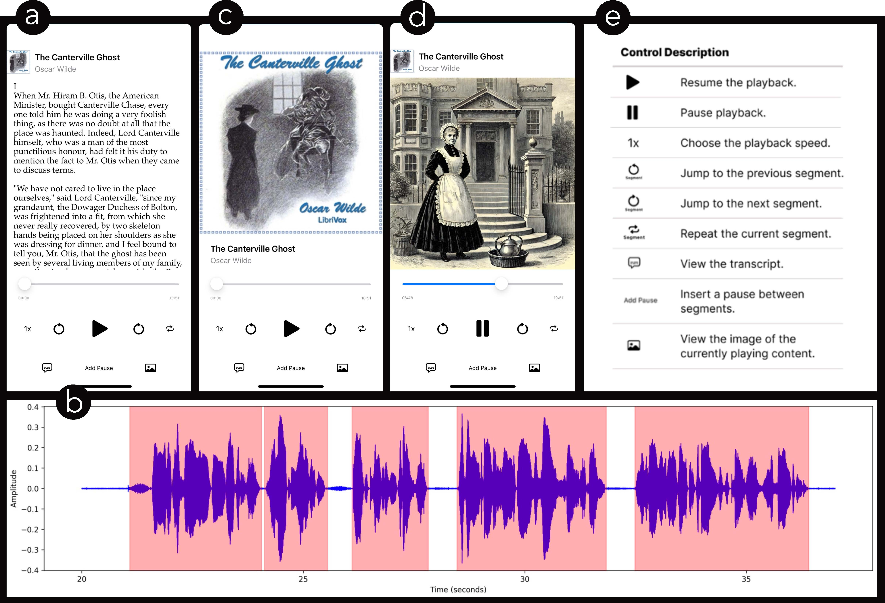
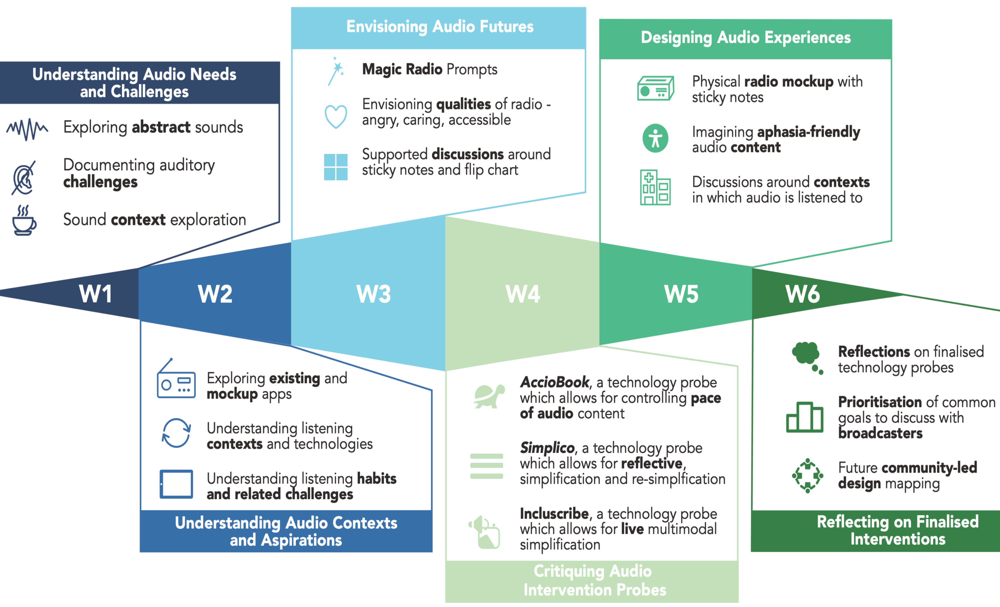
"Less is More": Impactful AAC Devices '24/25
This small, bespoke project extends my long-running effort to understand the high rates of Augmentative and Alternative Communication (AAC) abandonment - work that began during my PhD years. I have usually designed from pain points in existing systems. Here, we inverted the approach: We sought out a highly successful AAC user – Zuzenna - and, through ethnographic interviews, learned bottom-up how AAC works when it truly works, and what we can offer immediately to people with communication impairments. The research (published here: to be presented at ACM ASSETS, Denver, US) shows how often - overlooked low-tech supports can deliver instant benefits, evolve with the person, and meaningfully assist everyday communication and navigation. Check “An Old Bastard in Bright Orange Satin”.
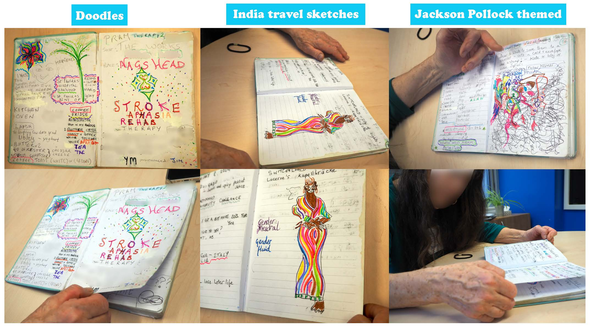
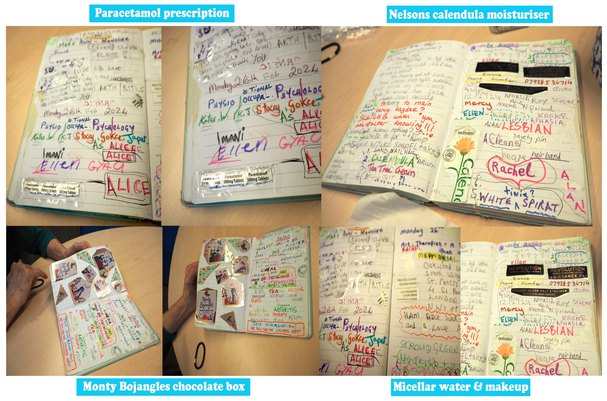
Co-Design-ING - '22/23
For five years I have been asking what co-design really does - and for whom. Too often it gets treated like a buzzword. In this project, I worked with people with learning disabilities inside Queensland’s largest disability provider – Endeavour Foundation - to keep things grounded. No method worship: I walk through the sessions we ran, the decisions we made, what broke, and what held - using theory as a lens, not a shield. If design theory is your thing, the paper’s on my Publications page(see “Co-Designing in the Middle”).
I have to issue a warning here, it reads a little “dry”, yet, it’s a clear map of how decisions were made and why.
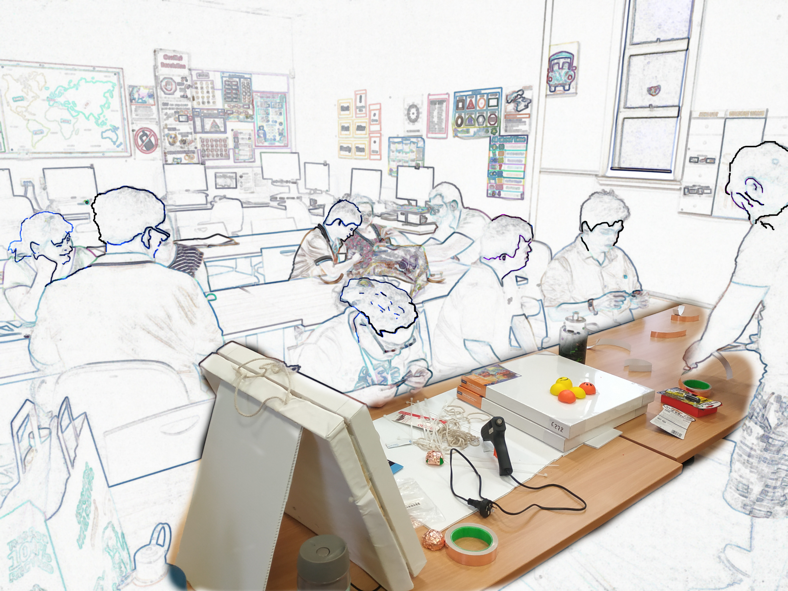
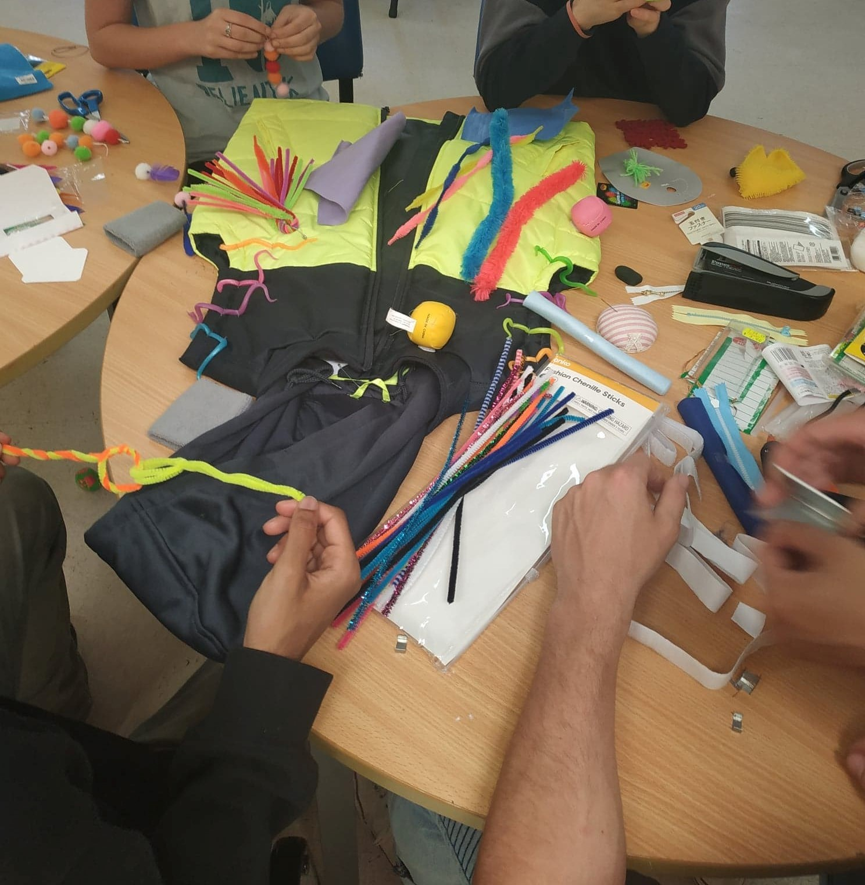
Beyond the Buckets of Support - '22/23
I spent my early career designing assistive tech and asking why it fails end-users. Working with disabled people and current/future AAC users, I realised I was overlooking everything that happens before first use: how devices reach people, how they are introduced, funded, and supported. Success hinges on onboarding, training, repair pathways - and whether people can actually access or afford the kit.
So I turned to the system around the device - the National Disability Insurance Scheme in Australia - mapping how recommendations become plans, purchases, and everyday tools. This project offers that systems view and also prototypes - a Pictorial Communicator (see Publications page ): a low-barrier aide that helps participants prepare for planning meetings, state goals in plain language, assemble evidence, and advocate for supports that fit their lives.
Less gadget, more pathway!
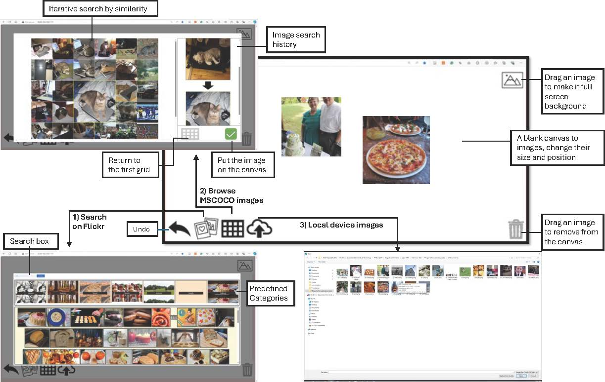
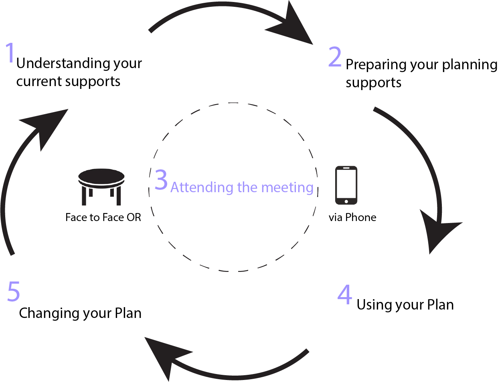
Tunning in: Accessible AudioVisual Media - '24/26
Like Sounds Accessible, this work with King’s, City St George’s, and BBC R&D asks how to make TV easier to follow - practically, in real living rooms. Over a series of four month-long sprints over two years, we co-designed and tested accessibility features and content scaffolds for broadcast and on-demand video. Most recently, we ran a large in-home deployment of a new system, led by PhD researcher Alexander Nevsky (see publications ).
We are targeting adoption-ready patterns that slot into existing TV apps and set-top boxes, deliver lightweight comprehension support without getting in the way, and come with clear implementation guidance. I genuinely hope UK broadcasters pick this up and run with it - the path to adoption is there.
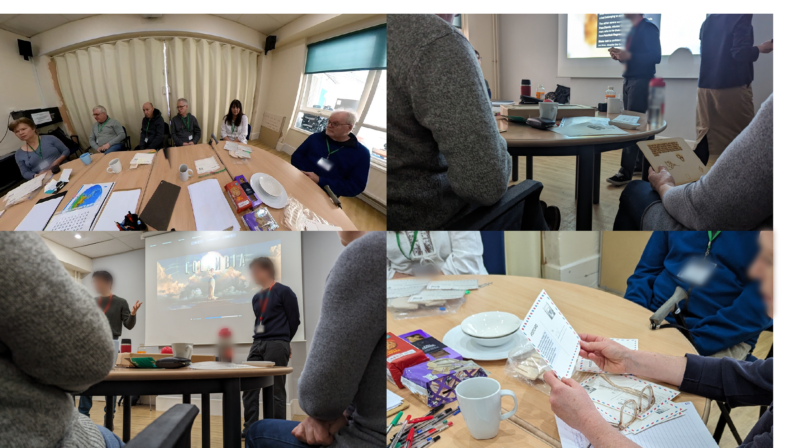
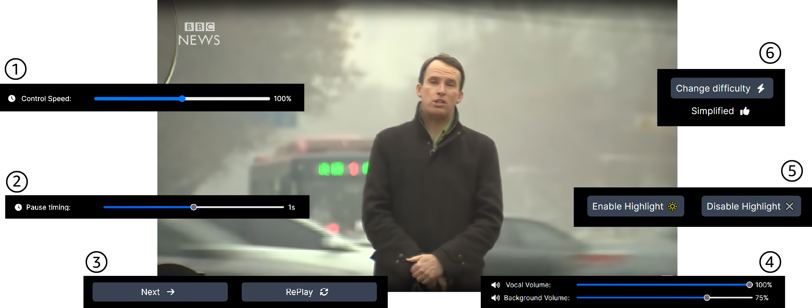
Self-Care-Full -'22
Right at the hype of the GenAI wave, our Design for Wellbeing Lab (led by Bernd Ploderer) began looking at how chatbots were being pulled into self-care - often enthusiastically, sometimes recklessly - cheap, always-on interfaces can shape vulnerable moments. This project asks how people i use GenAI for self-care, what goes right, and where it goes off the rails. We mapped real practices and common failure modes. From that, we sketched practical clear limits and uncertainty displays, human hands-off and crisis pathways. I left Australia before we could complete the build phase, but the article is published here. If you work at the intersection of mental health and AI and want implementation guidance, I am keen to share what we have learned.
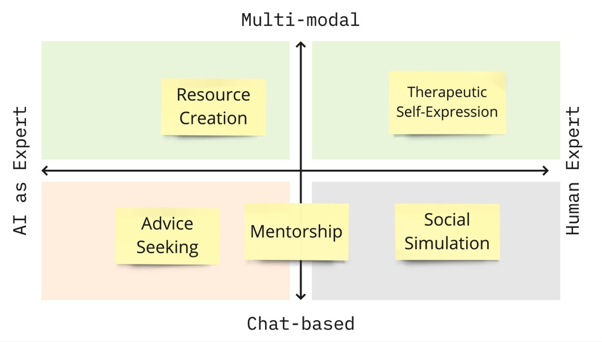
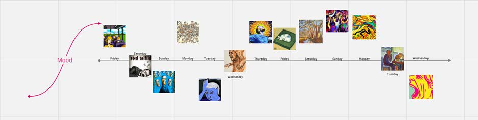
Talking AAC Heads - '17/22
This project-also my PhD - spanned four years of designing new communication devices. I spent hundreds of hours embedded in Learning & Life Centres with people with learning disabilities, watching what worked, what didn’t, and co-creating better tools.
It was a period of serious experimentation across software and hardware. Several prototypes moved from lab to life: adopted by the largest disability provider and used in workshops across two Day Centres. Not everything made it into papers; some devices simply found their place and kept being used.
Highlights include Talking Canvas, Playful TalkingBox, and a series of “Talking Pillow” probes - tangible and digital pieces that supported everyday communication in low-friction ways. Visit my scholar page and you will find the most work there.

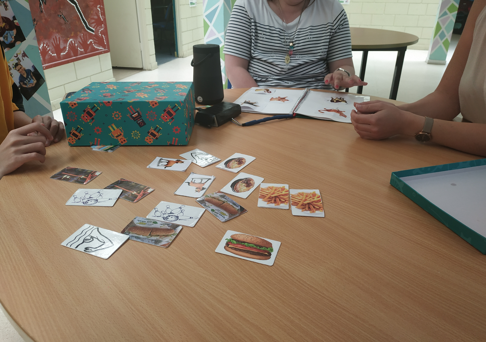
YouTube Ally - '17/22
I rarely work alone. A favourite example is my long-running collaboration with Andrew Bayor. During his PhD I mostly supported Andy on design and prototyping, and together we explored a space that was oddly underused: social media for people with learning disabilities. Early on we saw how crucial platforms like YouTube could be - and how inaccessible they often were. We co-designed and tested features to make searching and navigating easier, turning rough ideas into working prototypes and studies. The work produced both technology and papers; you can find the publications via my Publications page.
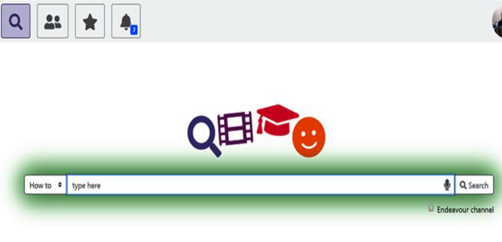
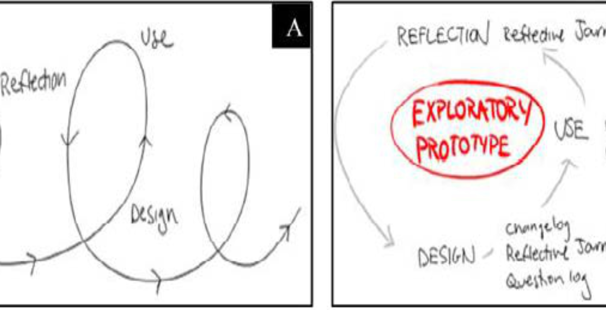
UX-UP '20/22
I loved teaching UX to students and early-career professionals - and kept refining how I teach it. Alongside the usual toolset (journey maps, empathy maps, personas), we developed an advanced module called Field Theory for UX: a practical method for reading context, framing problems, planning fieldwork, and turning messy evidence into clear decisions. Less tool soup, more situational judgment. If you want to expand your methods, the article is here.
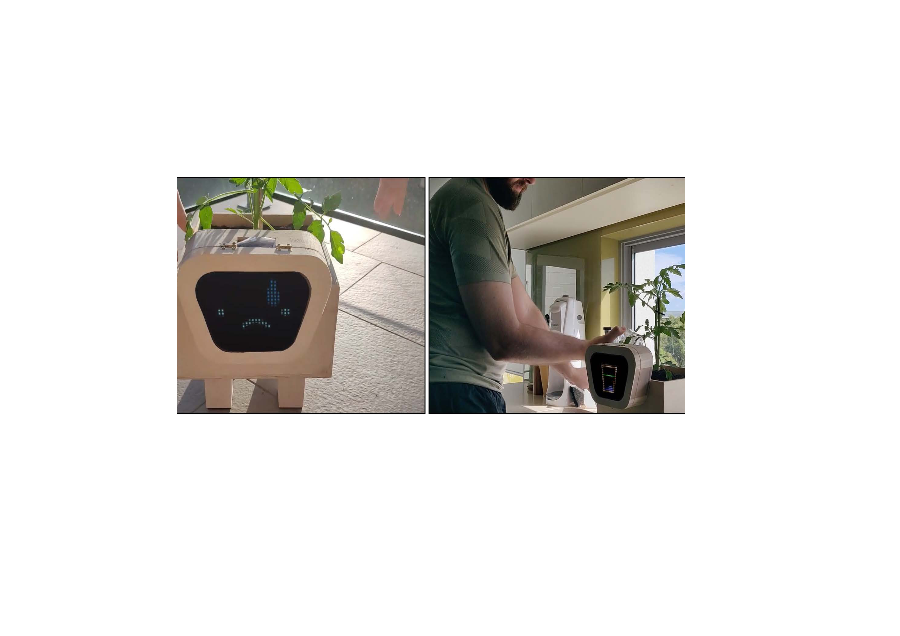
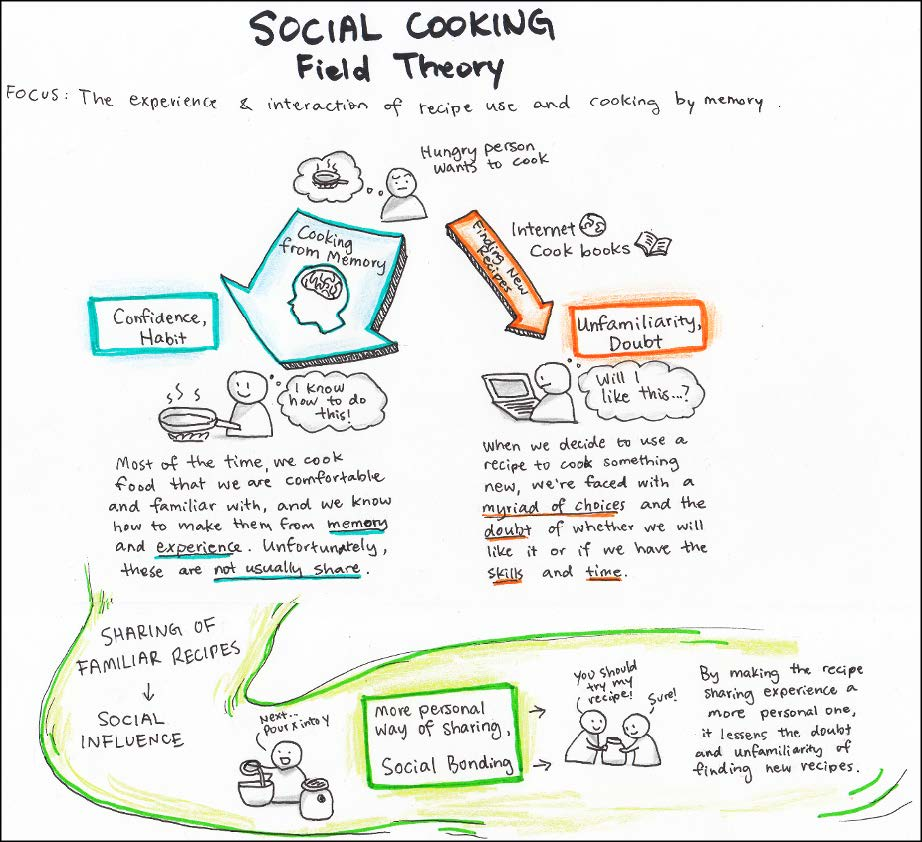
Wired Wild Wonderful - '22
This spin-off grew from a short stint at the Centre of Excellence for the Digital Child. I moved continents before it could fully mature, but the question still grips me: do we always need to design - and must everything chase “digital joy”? Here we probed a simple, uneasy idea: can technology nudge kids toward the outdoors rather than pull them away? – check my publication page.
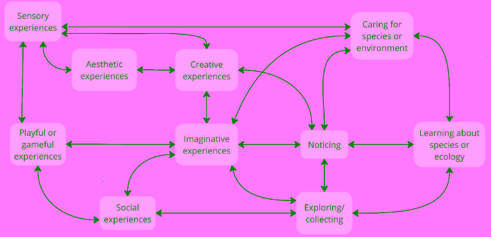
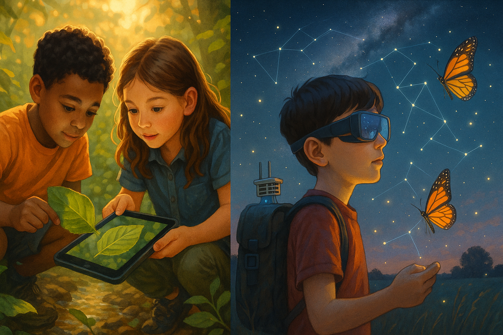
Play with Me Stay with Me -'21
Some autistic people find neurotypical social cues hard to read - and vice versa. With a PhD student and a great engineer, we built a bespoke interactive floor mat for one person with severe autism. Its simple job: create a calm, controllable focus of attention that others could share on his terms. The mat responded to pressure and movement with gentle light and sound patterns. The primary user set the pace; peers could “join the pattern” by stepping onto adjacent zones - no forced eye contact, no small talk, just a shared activity that felt safe.
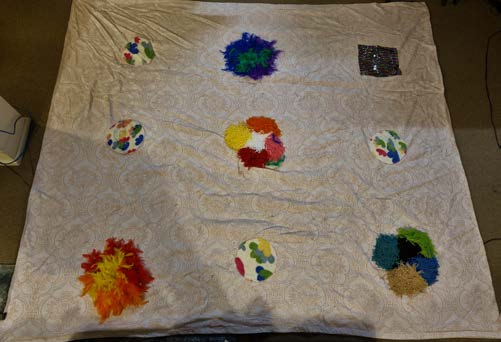
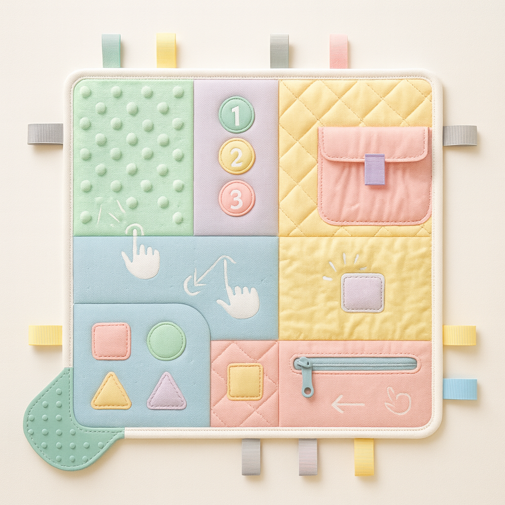
Search-a-Ability: Beyond Keywords '18/21
I worked with a team of interaction designers to rethink information retrieval for people with communication disabilities. Instead of forcing keyword precision, we prototyped browsing-by-similarity - start from an example, then explore semantically related results - alongside other low-demand search flows. We tested ideas through Wizard-of-Oz sessions, think-aloud studies, and interviews, then distilled practical principles: example-led queries, progressive disclosure, stable navigation (easy undo/redo), clear plain-language feedback, and visual “neighbourhoods” that show where you are in the search space.
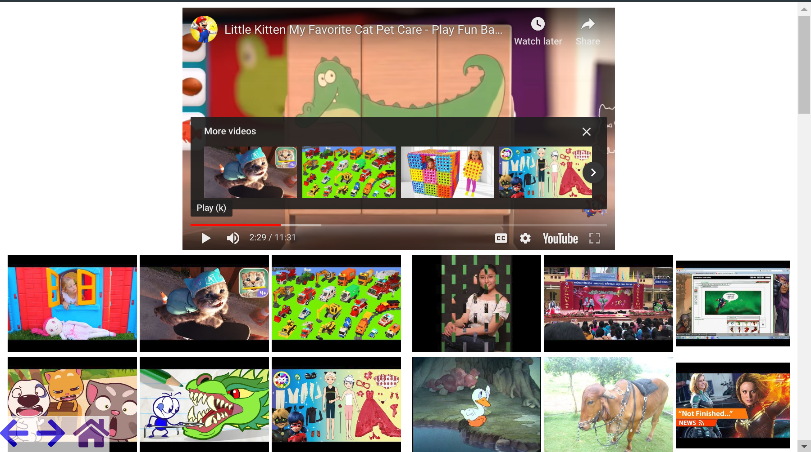
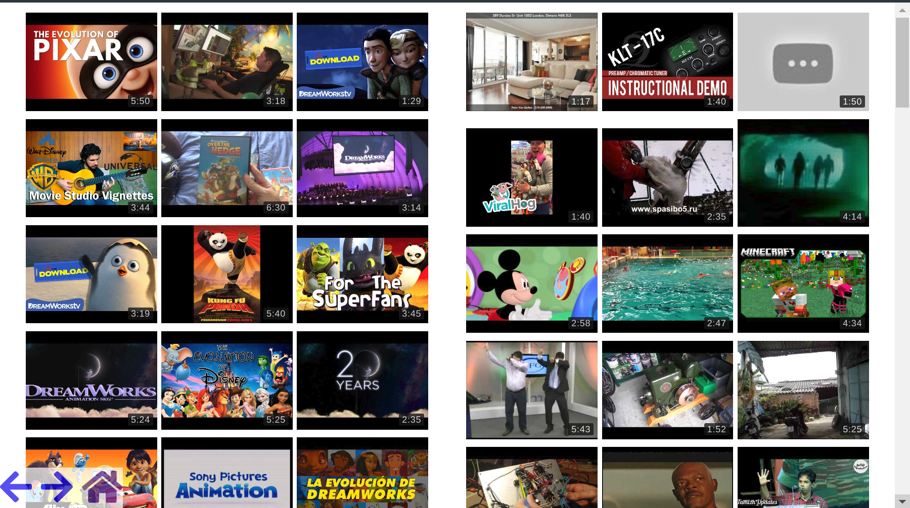
It is about People and Infrastructures too: Service Design '05/11
Service design emerged as a discipline in the 1990s and only later hit universities and job boards. I had been doing it since the mid-2000s - long before I called it that.
In 2004 I joined a citizens’ initiative Centre for Youth Integration; from 2005–2011 I served on the coordinating team. We grew into one of the most recognised NGOs in my home country, building “social innovation” before the label stuck. I worked as Outreach Programme Coordinator and Assistant Drop-in Program Lead, developing services for children facing poverty, disrupted schooling, and invisibility in the welfare system.
We ran dozens of programmes with support from Save the Children , UNICEF, the City of Belgrade, and others - enough to employ ~15 staff (social worker, art therapist, carers, etc.) and mobilise 60+ volunteers. There were no fixed hours; we built what was needed, when it was needed. We used every tool available - especially social media - to reach people, listen, and iterate.
What guided the work:
- Keep the organisation competitive through continuous fundraising.
- Meet clients’ needs with real choice, agency, and quality.
- Use technology pragmatically (social media, comms, simple data flows).
- Address pressing social and economic challenges, not just symptoms.
- Foster new programmes and participation models that outlive any one project.
I can talk about this for hours - feel free to reach out. Example training materials and national reports are available here and here .
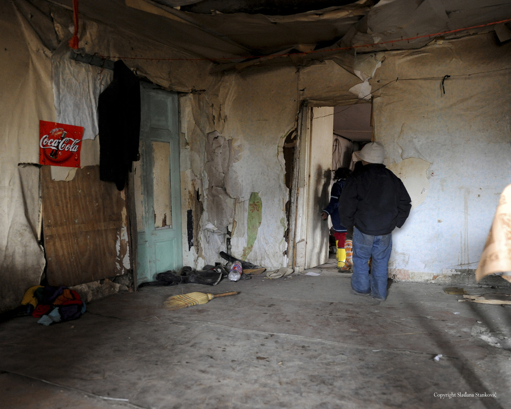
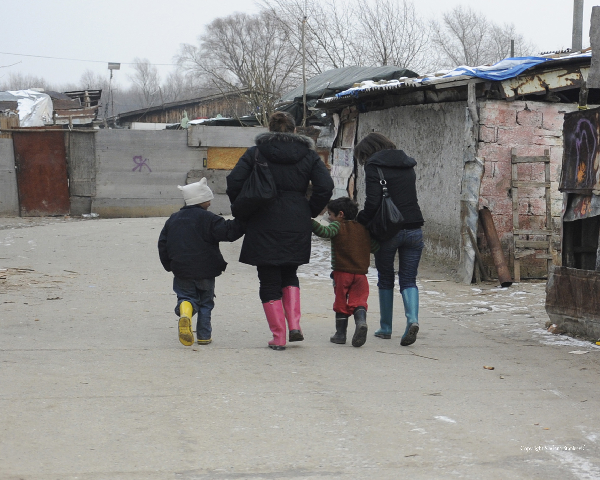